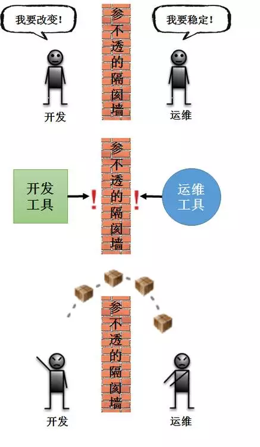
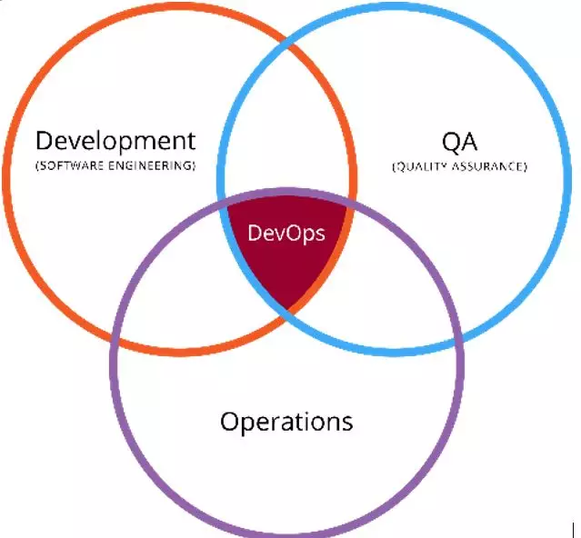
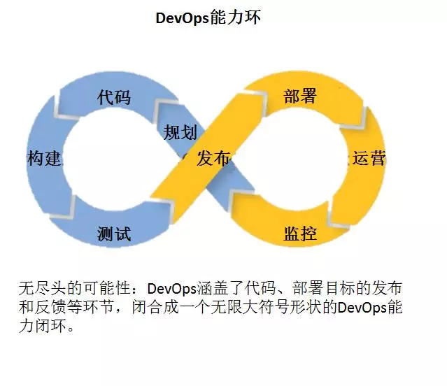
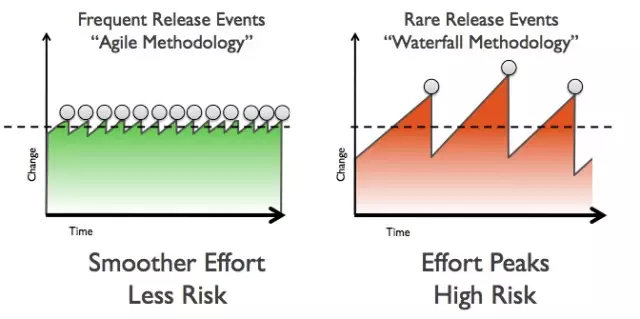

DevOps简介
DevOps是一个完整的面向IT运维的工作流，以IT自动化以及持续集成（CI）、持续部署（CD）为基础，来优化开发、测试、系统运维等多有环节。
DevOps的概念
DevOps一词的来自于Development和Operations的组合，突出重视软件开发人员和运维人员的沟通合作，通过自动化流程来使得软件构建、测试、发布更加快捷、频繁和可靠。

DevOps是为了填补开发端和运维端之间的信息鸿沟，改善团队之间的协作关系。不过需要澄清的一点是，从开发到运维，中间还有测试环节。DevOps其实包含了三个部分：开发、测试和运维。

换句话说，DevOps希望做到的是软件产品交付过程中IT工具链的打通，使得各个团队减少时间损耗，更加高效地协同工作。专家们总结出了下面这个DevOps能力图，良好的闭环可以大大增加整体的产出。

历史变革
由上所述，相信大家对DevOps有了一定的了解。但是除了触及工具链之外，作为文化和技术的方法论，DevOps还需要公司在组织文化上的变革。回顾软件行业的研发模式，可以发现大致有三个阶段：瀑布式开发、敏捷开发、DevOps。
DevOps早在九年前就有人提出来，但是，为什么这两年才开始受到越来越多的企业重视和实践呢？因为DevOps的发展是独木不成林的，现在有越来越多的技术支撑。微服务架构理念、容器技术使得DevOps的实施变得更加容易，计算能力提升和云环境的发展使得快速开发的产品可以立刻获得更广泛的使用。
好处是什么？
DevOps的一个巨大好处就是可以高效交付，这也正好是它的初衷。Puppet和DevOps Research and Assessment (DORA) 主办了2016年DevOps调查报告，根据全球4600位各IT公司的技术工作者的提交数据统计，得出高效公司平均每年可以完成1460次部署。
与低效组织相比，高效组织的部署频繁200倍，产品投入使用速度快2555倍，服务恢复速度快24倍。在工作内容的时间分配上，低效者要多花22%的时间用在为规划好或者重复工作上，而高效者却可以多花29%的时间用在新的工作上。所以这里的高效不仅仅指公司产出的效率提高，还指员工的工作质量得到提升。
DevOps另外一个好处就是会改善公司组织文化、提高员工的参与感。员工们变得更高效，也更有满足和成就感；调查显示高效员工的雇员净推荐值（eNPS:employee Net Promoter Score）更高，即对公司更加认同。
快速部署同时提高IT稳定性。这难道不矛盾吗？
快速的部署其实可以帮助更快地发现问题，产品被更快地交付到用户手中，团队可以更快地得到用户的反馈，从而进行更快地响应。而且，DevOps小步快跑的形式带来的变化是比较小的，出现问题的偏差每次都不会太大，修复起来也会相对容易一些。

因此，认为速度就意味着危险是一种偏见。此外，滞后软件服务的发布也并不一定会完全地避免问题，在竞争日益激烈的IT行业，这反而可能错失了软件的发布时机
为什么DevOps会兴起？
条件成熟：技术配套发展
技术的发展使得DevOps有了更多的配合。早期时，大家虽然意识到了这个问题的，但是苦于当时没有完善丰富的技术工具，是一种“理想很丰满，但是现实很骨感”的情况。DevOps的实现可以基于新兴的容器技术；也可以在自动化运维工具Puppet、SaltStack、Ansible之后的延伸；还可以构建在传统的Cloud Foundry、OpenShift等PaaS厂商之上。
来自市场的外部需求：这世界变化太快
IT行业已经越来越与市场的经济发展紧密挂钩，专家们认为IT将会有支持中心变成利润驱动中心。事实上，这个变化已经开始了，这不仅体现在Google、苹果这些大企业中，而且也发生在传统行业中，比如出租车业务中的Uber、酒店连锁行业中的Airbnb、图书经销商Amazon等等。能否让公司的IT配套方案及时跟上市场需求的步伐，在今天显得至关重要。
DevOps 2016年度报告给出了一个运维成本的计算公式：
停机费用成本 = 部署频率 * 版本迭代失败概率 * 平均修复时间 * 断电的金钱损失
来自团队的内在动力：工程师也需要
对于工程师而言，他们也是DevOps的受益者。微软资深工程师Scott Hanselman说过“对于开发者而言，最有力的工具就是自动化工具”（The most powerful tool we have as developers is automation）。
工具链的打通使得开发者们在交付软件时可以完成生产环境的构建、测试和运行；正如Amazon的VP兼CTO Werner Vogels那句让人印象深刻的话：“谁开发谁运行”。（You build it, you run it）
实现DevOps需要什么？
硬性要求：工具上的准备
上文提到了工具链的打通，那么工具自然就需要做好准备。现将工具类型及对应的不完全列举整理如下：
代码管理（SCM）：GitHub、GitLab、BitBucket、SubVersion
构建工具：Ant、Gradle、maven
自动部署：Capistrano、CodeDeploy
持续集成（CI）：Bamboo、Hudson、Jenkins
配置管理：Ansible、Chef、Puppet、SaltStack、ScriptRock GuardRail
容器：Docker、LXC、第三方厂商如AWS
编排：Kubernetes、Core、Apache Mesos、DC/OS
服务注册与发现：Zookeeper、etcd、Consul
脚本语言：python、ruby、shell
日志管理：ELK、Logentries
系统监控：Datadog、Graphite、Icinga、Nagios
性能监控：AppDynamics、New Relic、Splunk
压力测试：JMeter、Blaze Meter、loader.io
预警：PagerDuty、pingdom、厂商自带如AWS SNS
HTTP加速器：Varnish
消息总线：ActiveMQ、SQS
应用服务器：Tomcat、JBoss
Web服务器：Apache、Nginx、IIS
数据库：MySQL、Oracle、PostgreSQL等关系型数据库；cassandra、mongoDB、redis等NoSQL数据库
项目管理（PM）：Jira、Asana、Taiga、Trello、Basecamp、Pivotal Tracker
在工具的选择上，需要结合公司业务需求和技术团队情况而定。（注：更多关于工具的详细介绍可以参见此文：51 Best DevOps Tools for #DevOps Engineers）
软性需求：文化和人
DevOps成功与否，公司组织是否利于协作是关键。开发人员和运维人员可以良好沟通互相学习，从而拥有高生产力。并且协作也存在于业务人员与开发人员之间。
出席了2016年伦敦企业级DevOps峰会的ITV公司在2012年就开始落地DevOps，其通用平台主管Clark在接受了InfoQ的采访，在谈及成功时表示，业务人员非常清楚他们希望在最小化可行产品中实现什么，工程师们就按需交付，不做多余工作。
这样，工程师们使用通用的平台（即打通的工具链）得到更好的一致性和更高的质量。此外，DevOps对工程师个人的要求也提高了，很多专家也认为招募到优秀的人才也是一个挑战。
DevOps的采用现状
哪些公司在用？
DevOps正在增长，尤其是在大企业中：调查发现，DevOps的接受度有了显著提高。74%的受访者已经接受了DevOps，而去年这一比例为66%。目前，在81%的大企业开始接受DevOps，中小企业的接受度仅为70%。
那么具体而言都有些公司在采用DevOps呢？Adobe、Amazon、Apple、Airbnb、Ebay、Etsy、Facebook、LinkedIn、Netflix、NASA、Starbucks、Target（泛欧实时全额自动清算系统）、Walmart、Sony等等。
他们怎么实施的？
首先，大企业正在自下而上接受DevOps，其中业务单位或部门（31%）以及项目和团队（29%）已经实施DevOps。不过，只有21%的大企业在整个公司范围内采用了DevOps。
其次，在工具层面上，DevOps工具的用量大幅激增。Chef和Puppet依然是最常用的DevOps工具，使用率均为32%。Docker是年增长率最快的工具，用量增长一倍以上。Ansible的用量也有显著增加，使用率从10%翻倍至20%。